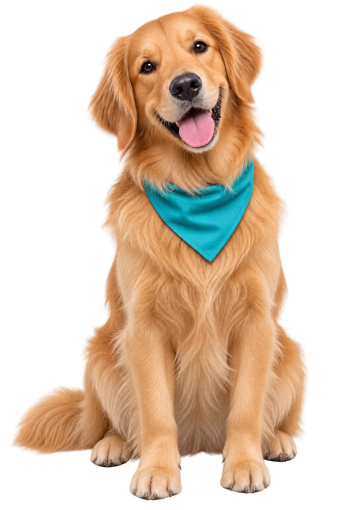
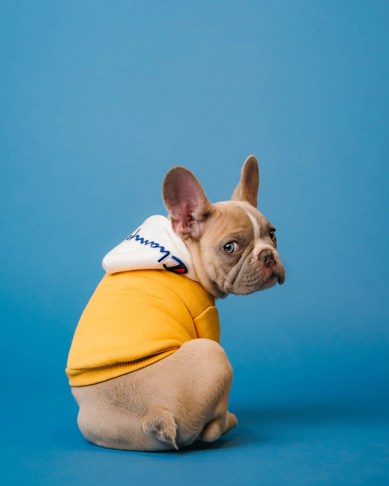
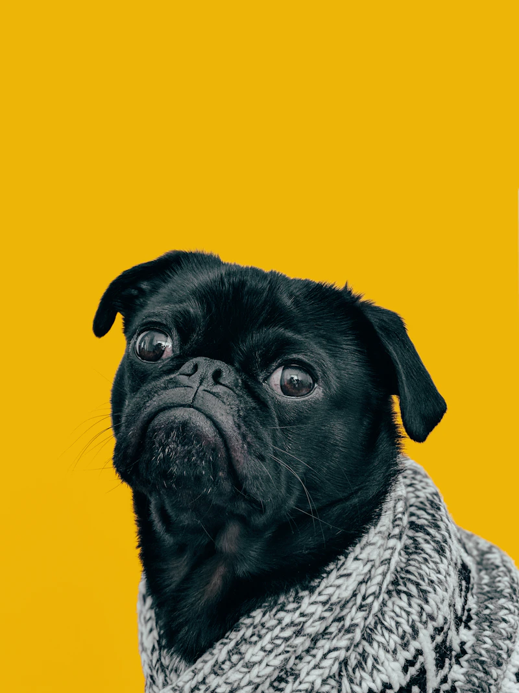
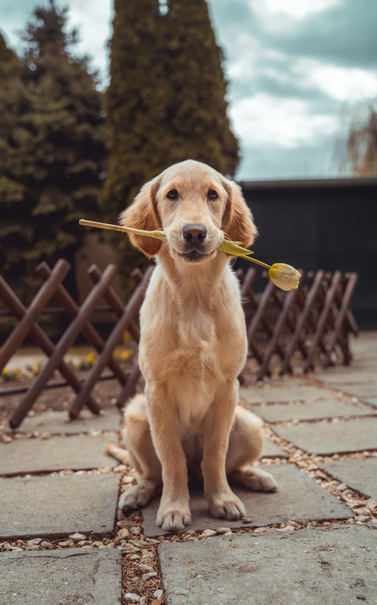
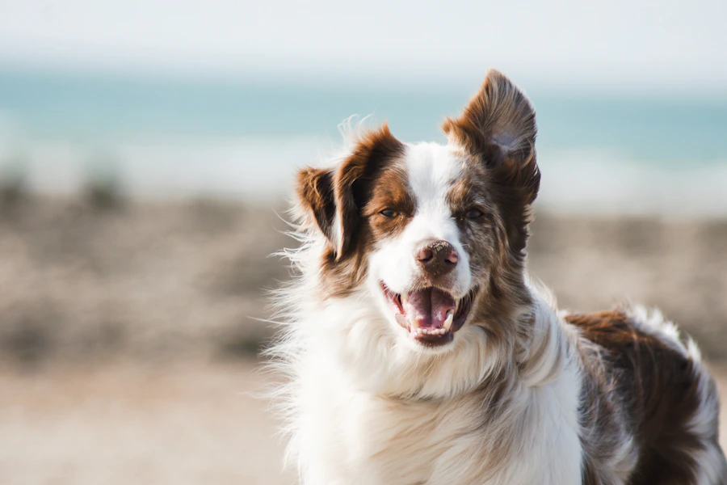

CUIDADO BOM É CUIDADO COM AMOR
Carinho quedá pra sentir.Beleza quedá pra ver.
Banho, tosa e muito amor para deixar seu melhor amigo limpinho, cheiroso e feliz.
Para quem é muito mais que um pet. É família.

E um tantão de charme!
DO BANHO AO ÚLTIMO LACINHO
Um cuidado especial
para cada patinha.
Cada detalhe pensado para deixar
seu pet ainda mais feliz.
Banho com
Carinho
Um momento de cuidado, limpeza e muito carinho para seu melhor amigo.

UM CHEIRINHO DE FELICIDADE 02 / CHARME DE SOBRATosa com
Estilo
Um visual renovado, com atenção ao conforto e às necessidades do seu pet.

Banho + Tosa
O cuidado completo para seu pet sair limpinho, confortável e cheio de charme.

04 / CADA PET É ÚNICOCuidados
Especiais
Converse com nossa equipe para conhecer as opções de cuidado disponíveis.
Fotografias ilustrativas. Consulte a equipe sobre os cuidados indicados para seu pet.

Carinho é o nosso jeitinho.AQUI, SEU MELHOR AMIGO É ESPECIAL
Muito além do banho.
Uma experiência
de carinho.
Atendimento com carinho
Um olhar atento para quem faz parte da sua família.
Atenção ao conforto
Respeito ao jeitinho e às necessidades de cada pet.
Cuidado em cada detalhe
Pequenos gestos que fazem parte de um bom cuidado.
Contato fácil pelo WhatsApp
Uma conversa simples para combinar o próximo cuidado.
FOFURA EM PRIMEIRO PLANO
Eles merecem todos
os holofotes.
Olhares que conquistam.
Patinhas que deixam sua marca.
quatro patas.
Uma galeria de inspiração: as imagens são ilustrativas e não representam clientes ou resultados da MK Banho e Tosa.
PRA GENTE, É SOBRE AMOR
Porque amor
também é cuidado.
Na MK Banho e Tosa, acreditamos que cada pet merece atenção, carinho e cuidados especiais. Nosso propósito é tornar cada visita um momento agradável para quem faz parte da sua família.
Vamos cuidar do seu melhor amigo?É amor.
O PRÓXIMO CARINHO COMEÇA AQUI
Bora deixar
seu pet ainda
mais lindo?
Conte um pouquinho sobre seu melhor amigo e fale com nossa equipe pelo WhatsApp.
Vamos combinar um horário?
É rapidinho. E cheio de carinho.
Modo demonstração: o WhatsApp da empresa ainda não foi configurado. Nenhuma solicitação será enviada.
PODE PERGUNTAR
Dúvidas?
A gente te ajuda!
Uma boa conversa também
faz parte do cuidado.
Como faço para agendar?+
Preencha o formulário desta página e envie a solicitação pelo WhatsApp. Nossa equipe conversa com você para confirmar a disponibilidade. No modo demonstração, nenhuma solicitação é enviada.
Preciso marcar com antecedência?+
Entre em contato antes da visita para consultar a agenda e combinar um horário com a equipe.
Como consultar os valores?+
Conte à equipe qual serviço procura e informe o porte do seu pet. Os valores e as opções de cuidado serão apresentados pelo WhatsApp.
Quanto tempo dura o atendimento?+
O tempo pode variar conforme o cuidado escolhido e as necessidades do seu pet. Consulte a equipe ao solicitar o agendamento.
Como saber os horários disponíveis?+
Envie sua data e período de preferência pelo WhatsApp. A equipe informará os horários disponíveis e confirmará os detalhes com você.
WhatsApp em configuração
Horários a confirmar
Instagram em breve